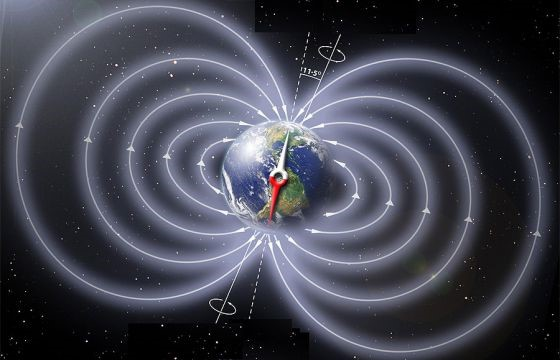

Explore os Temas



O Campo Magnético da Terra
Descubra como o núcleo da Terra gera nosso escudo magnético
Auroras Austrais e Boreais
Entenda o fenômeno das luzes do céu polar
Impactos na Vida Humana e Tecnológica
Como o campo magnético afeta nossa tecnologia e saúde
Vídeos e Curiosidades
Assista vídeos explicativos e descubra fatos interessantes